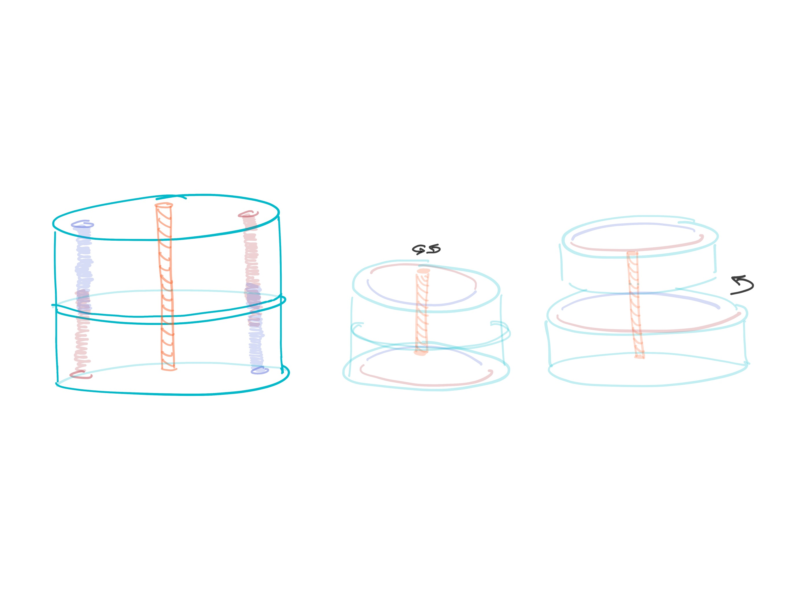
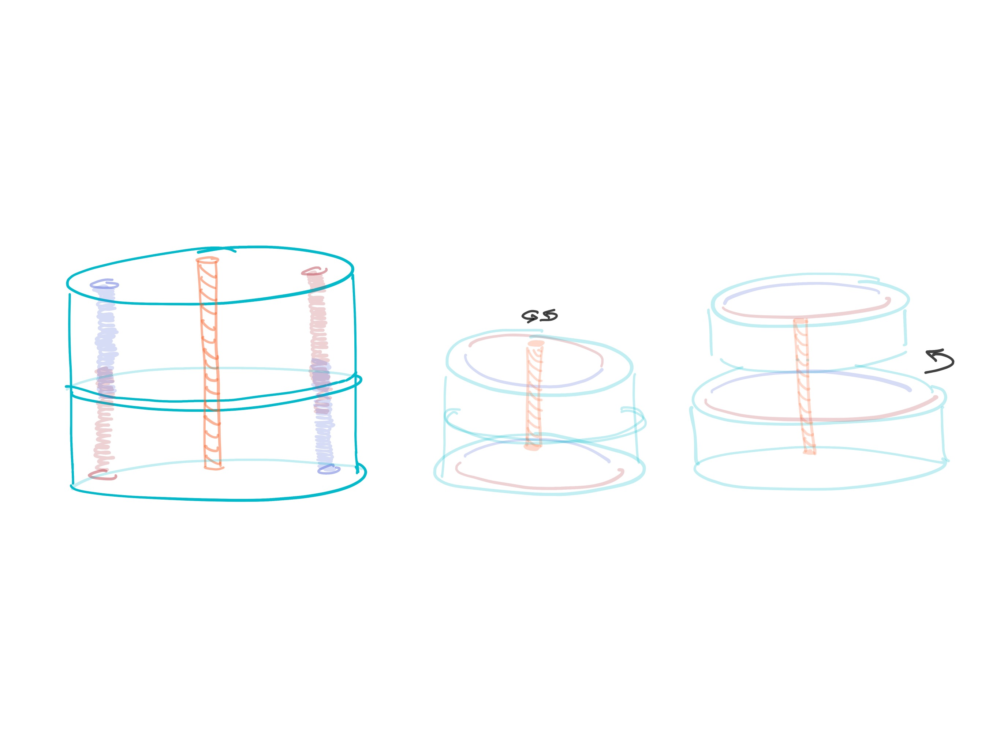
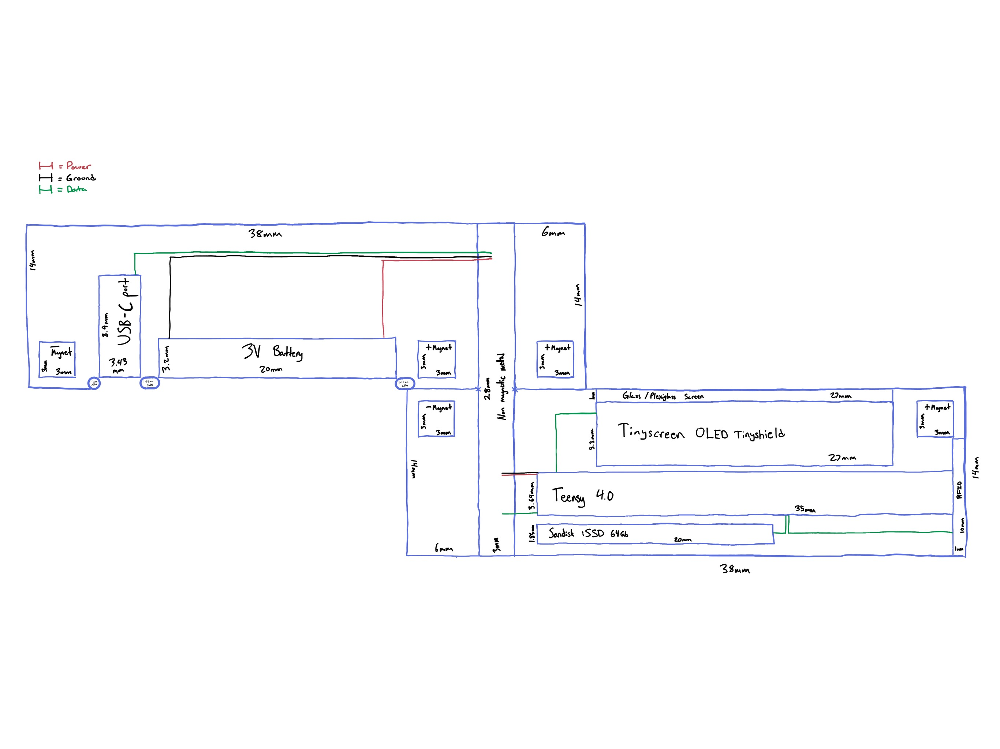
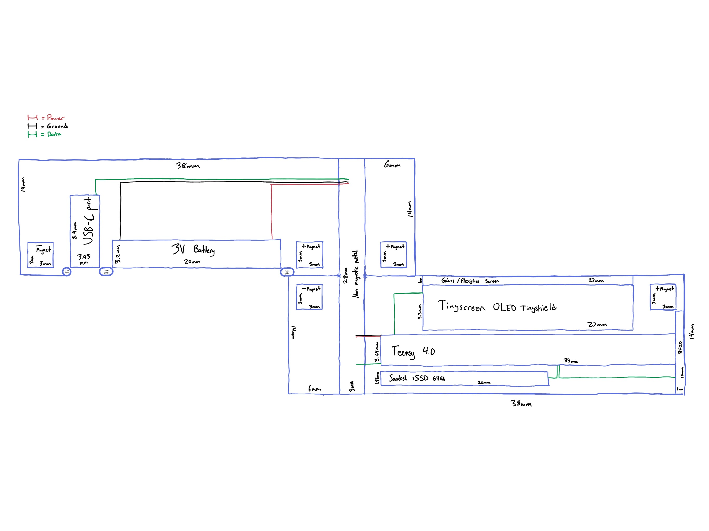
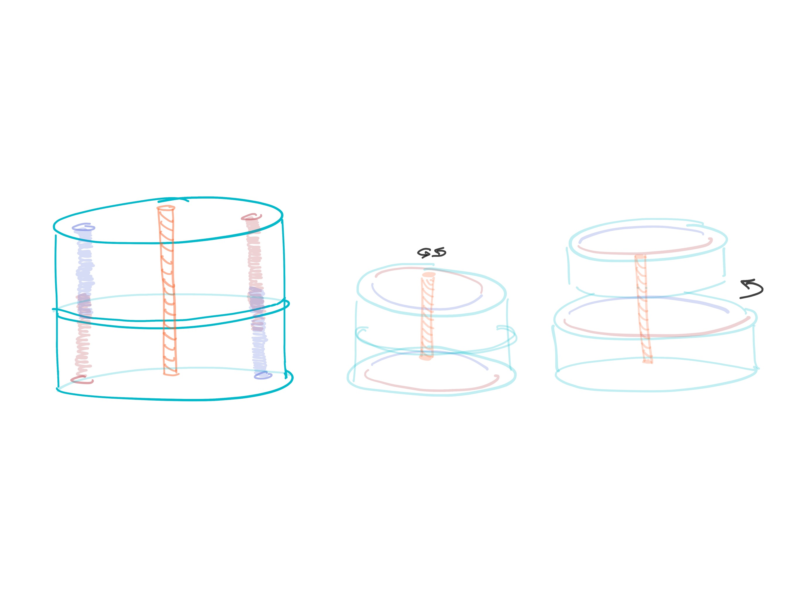
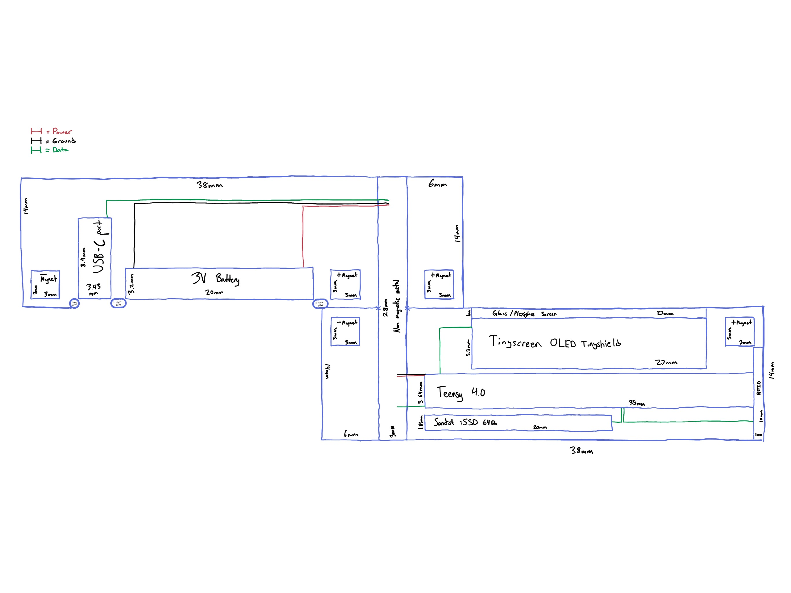

 

This exercise originated when a member of the Block corporation asked their Twitter audience for help thinking about batteries that could fit their hardware.
What kind of battery should power the hardware wallet we're building? We've got a decision to make and would like to hear from you! You can find context about the decision and tradeoffs in this public document: https://t.co/dEiLJizHJz 🧵
— Max Guise (@max_guise) January 25, 2022
I don't think anyone has an idea of what their hardware wallet will look like. Regardless I like watch batteries due to their form factor and long-term efficiency. So instead of thinking about what battery would fit this unknown hardware I concepted the hardware around the battery I would want to use.

